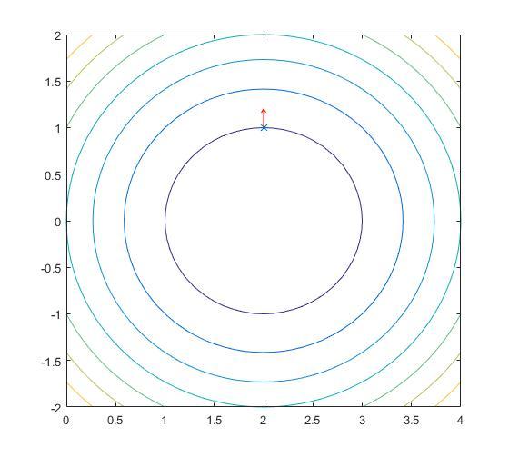
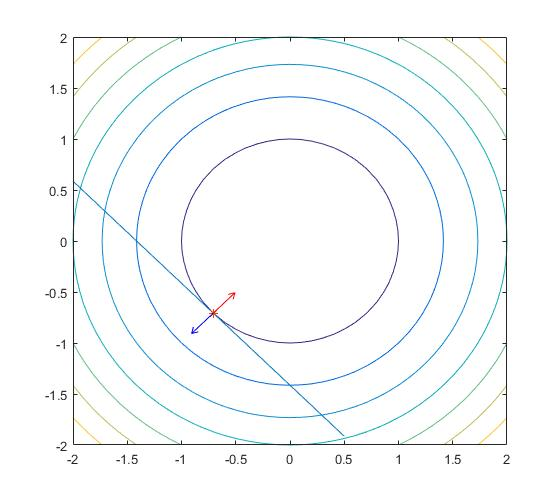

机器学习算法中经常使用拉格朗日乘子法求解最优化问题，如PCA，SVM等。有时候还会用到拉格朗日的对偶问题（SVM中通过求解对偶问题得到原始问题的解）。这几天看了周志华西瓜书的附录和凸优化这本书的相关章节，现对拉格朗日及其对偶问题总结如下。
拉格朗日函数及KKT条件
优化问题都可以化成以下标准形式：
为简化问题，现将等式约束和不等式约束分开考虑
一个等式约束
在高维空间中，一组等式约束确定的是一个超平面。假如只有一个等式约束$h(x)=0$，原始空间维数是$n$，则$h(x)=0$确定的就是一个$n-1$维的超平面。假设只有一个等式约束。即：
那么，存在一下两条性质：
- 点$x$在超平面$h(x)=0$上的梯度方向垂直于超平面方向
- 如果$f(x)$的最优值在$x^*$处取得，则$f(x)$在该点的梯度必垂直与超平面$h(x)=0$
要理解第一点，需要理解梯度的概念，梯度指明了一个方向，沿着这个方向走函数值上升最快。假如我们的函数是$f(x) = (x_1- 2)^2+x_2^2$，函数梯度是$\frac{\partial f(x)}{\partial x} = [\frac{\partial f(x)}{\partial x_1}, \frac{\partial f(x)}{\partial x_2}]^{\mathrm T}=[2(x_1-2), 2x_2]^{\mathrm T}$，即梯度向量与圆心$(2, 0)$到$(x_1,x_2)$的向量平行，所以任意一点的梯度在该点处与圆垂直。
下面图形可方便理解：

这个图形中一圈一圈的是等值线，越往外函数值越大，在$(2,1)$这个点，求得的梯度是$(0,2)^{\mathrm T}$，垂直于圆，沿着$(0,2)^{\mathrm T}$这个方向函数值上升最快。
对于第二点，我们假设我们的超平面是二维平面上的一条直线$h(x)=x_1+x_2+\sqrt2=0$，我们的目标函数$f(x) =x_1^2+x_2^2$，则可以得到以下图形：

$f(x)$在直线与圆相切时的切点处取得最小值，这是直线的梯度方向如红色箭头所示，圆的梯度如蓝色箭头所示。
通过以上两条性质我们可知，当函数在超平面$h(x)=0$ 上一点$x^\ast$处取得最小值时，$\nabla f(x^\ast)$ 与 $\nabla h(x^\ast)$方向相反或相同，如果用数学的语言来描述这个结论就是，存在一个$\lambda$，使得：
我们定义拉格朗日函数：
上述等式实际上就是：
如果再对$\lambda$求偏导并令其等于0，实际就得到了原始的等式约束：
所以等式约束问题(1)可以通过联立(5)(6)求解
多个等式约束
当存在多个等式约束时，拉格朗日函数定义为：
它对$x$求偏导后有：
(8)和(5)虽然看起来不一样，但同样可以用解释(5)的方式来解释(8)。实际上，每个等式确定的超平面梯度方向的加和必定与多个等式确定的超平面垂直。我们可以举个简单例子来验证这一点，比如我们有两个等式，两个等式确定的平面都是一个二维面，那么这两个等式联合确定的超平面就是条直线，由高中知识（不知道的去翻书）可知，这条直线垂直于这两个平面的法向量所确定的平面。
也就是说多个等式约束问题，同样可以通过联立方程来解。
不等式约束
假设只有不等式约束：
其拉格朗日函数形式是：
多个不等式构成的可行域不再是一个超平面，而是一个体。这样的话令$f(x)$取最优的点$x^{\ast}$有两种情况：
- $x^{\ast}$出现在体中
- $x^{\ast}$出现在体表面上
如果$x^{\ast}$出现在体中，因为对于体中的任意一点$x$，都有$g_i(x)<0$，故约束不起作用，所以函数$f(x)$的最优值可以直接通过求导得到，即可令$\mathbf{\mu} = \mathbf 0$，然后然后令$\nabla L(x,\mu)=0$求得。
如果$x^{\ast}$出现在体的表面上，则必有一个或多个（如果$x^\ast$出现在交点处）不等式等号成立，其他等号不成立，对于等号成立的部分，问题转化成等式约束问题，对于等号不成立的部分，约束条件可以忽略。
对于等式成立的部分，$\mu$一定大于0，即$f(x)$在$x^\ast$处的梯度方向与超平面在$x^\ast$处的方向相反，为什么？
因为梯度的方向是函数值升高的方向，所以超平面的梯度方向一定向外（体内$g_i(x) < 0$，体表$g_i(x) = 0$），而$f(x)$的梯度一定向里， 因为$x^\ast$在体表取得，体内$f(x) > f(x^\ast)$
综上两种情况有：
KKT 条件
前两节我们分别对等式和不等式进行了分析，现在我们考虑这两种约束都存在的情况。对于标准形式的优化问题（1），拉格朗日函数为：
则优化问题（1）取得最优值时须满足KKT最优性条件：
拉格朗日对偶
对偶函数的定义
对于式（12）所示的拉格朗日函数，其对偶函数定义为：
其中$\mathrm {inf}$表示下界的意思。因为$h_i(x)=0$，$g_j(x) \le 0$，故对于$\mu \ge0,\,\lambda$总有：
即对偶函数给出了问题(1)的一个下界。
对偶问题定义
既然对偶函数(14)给出了原始问题(1)的一个下界，那我们自然就想知道这个下界到底有多好，这就是拉格朗日对偶问题：
下面我们通过两个例子讲解下怎么推导拉格朗日对偶问题：
1. 线性方程组的最小二乘解
该问题的拉格朗日函数是：
从前面的讲解知道，这种只有等式约束的问题可以通过令$\nabla L(x) = 0$求解，而且$L(x)$是一个二次凸函数，其有唯一解，即：
关于矩阵求导方法，请参考矩阵求导
将$x = -\frac{1}{2}A^{\mathrm T}\lambda$代入（18）即可得到原始问题的拉格朗日对偶函数：
那么，拉格朗日对偶问题为：
2. 标准形式的线性规划
该问题的拉格朗日函数是：
这是一个线性函数，只有在$c+A^{\mathrm T}\lambda-\mu = 0$时，$L(x,\lambda,\mu)$才有平凡的下界$-\lambda^{\mathrm T}b$，否则下界为$-\infty$。
故阿朗格朗日对偶问题是：
对偶问题求解总结
求解对偶问题，就是通过KKT条件（线性方程最小二乘解问题）或者直接观察（标准线性规划问题）将拉格朗日函数中的原始问题的参数消掉，只剩下拉格朗日乘子的过程。同时要满足KKT条件。
强弱对偶
我们费了这么半天劲绕到对偶问题上到底是为了啥？
因为原始问题有时候往往不好解，而对偶问题一定是一个凸优化问题（式16中极大化目标是凹函数，约束集是凸集），好解。
特别地，当对偶问题满足强对偶性时，对偶问题的最优解即是原始问题的最优解。假设对偶问题的最优解为 $d^\ast$，原始问题的最优解为$p^\ast$，则总有：
如果上式中等号成立，则满足强对偶性，即：
否则认为其满足弱对偶性。
Slater约束准则
一般情况下，强对偶性不成立，但是如果原问题是凸问题，即是如下形式：
其中$f,g_i(x)$是凸函数。并且满足一些约束准则，如Slater准则时，强对偶性成立。
Slater准则：当存在一个相对内点使得所有$g_i(x) \lt 0$严格成立时，强对偶性成立。如果$g_i(x)$中是仿射函数（$f(x)=c^{\mathrm T}x+t$这种函数），则不需要限制。